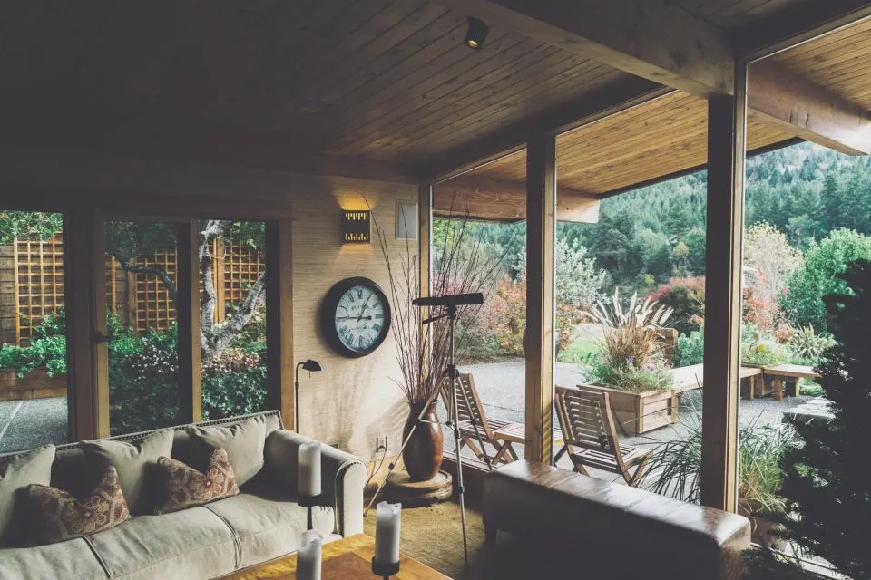
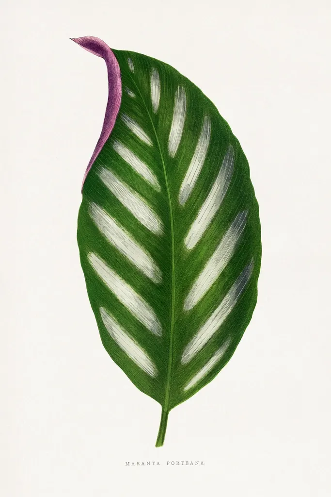

contact
お便り、
お待ちしています
ご相談はもちろん、「こんな家を見かけた」というお話も歓迎です。お返事は営業日の2日以内に。
お問い合わせフォームは現在準備中です。しばらくしてから再度お試しください。

鎌倉・御成町で、
古民家と平屋をさがす
小さな不動産屋です。

一／四
how we work
古い家の屋根は、何十年も雨と日差しを受けとめてきました。まずは、その屋根の下に入ってみるところから。
柱の傷や、縁側のすり減った板。前の住まい手の時間が残る場所を、いっしょに確かめます。
季節がめぐるたびに、庭の木が家の表情を変えていきます。手入れのことも、ゆっくりお話しします。
やがて家に、ことりが遊びに来るようになったら。そこはもう、あなたの家です。
calendar
春
3〜5月
日当たりと風の通りを見るのに良い季節。庭の草花の様子もわかります。
夏
6〜8月
梅雨どきは湿気の具合を確かめる好機。押し入れや床下のにおいも。
秋
9〜11月
台風のあとの雨どいや屋根を見ておくと安心。紅葉の谷戸も歩きどき。
冬
12〜2月
日の短い季節に、部屋の奥まで光が届くか。寒さ対策の相談もこの時期に。
access
〒248-0012 神奈川県鎌倉市御成町（番地はサンプル） 10:00〜17:00（水・日曜定休）
contact
ご相談はもちろん、「こんな家を見かけた」というお話も歓迎です。お返事は営業日の2日以内に。
お問い合わせフォームは現在準備中です。しばらくしてから再度お試しください。